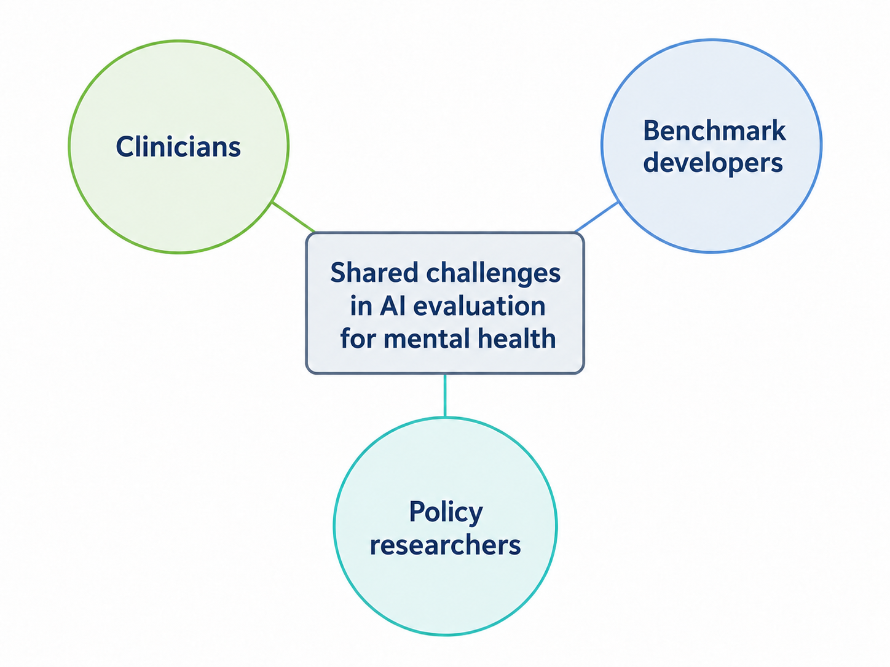

Measuring Safety, Not Benchmark Scores: Infrastructural Barriers to Mental-Health AI Evaluation Summer 2026
A qualitative study of the field and recommendations on concrete challenges seen in building AI evaluation tools for mental health, as experienced by 20 mental health experts, policy researchers, and mental health benchmark developers in the domain.

